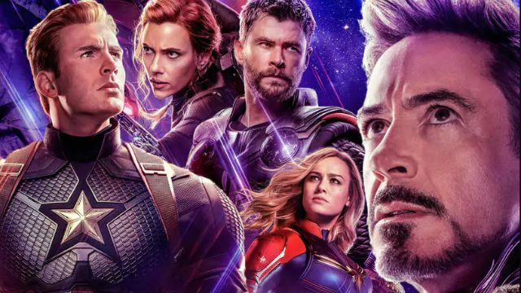

-

- 
Cuando Loki llega a la tierra se roba el Teseracto e hipnotiza a Clint Barton, al Dr. Selvig y a algunos agentes de S.H.I.E.L.D. Para enfrentar esta amenaza, Nick Fury reúne a Capitán América, Iron Man, Thor, Hulk, Black Widow y Hawkeye siendo liberado, generando así al famoso equipo conocido como Los Vengadores.
Con S.H.I.E.L.D. destruido y los Vengadores necesitados de un descanso en su deber como héroes, Tony Stark inicia un programa inactivo con el objetivo de mantener la paz mundial, creando a un robot de alta inteligencia llamado Ultrón, para detectar amenazas globales. Las cosas comienzan a complicarse cuando Ultron obtiene una mente y conciencia propia y decide erradicar a toda la humanidad por considerarla el mayor riesgo para el planeta, por lo que los héroes más poderosos del universo, incluyendo a Iron Man, Capitán América, Thor, Hulk, Black Widow y Hawkeye, serán expuestos ante la prueba más difícil que han hecho hasta ahora cuando el destino del planeta se ponga en juego. Cuando Ultrón emerja, dependerá de Los Vengadores detener sus terribles planes, y pronto incómodas alianzas e inesperadas acciones pavimentarán el camino para una épica y única aventura global.1 Además cuenta con la aparición de War Machine, Falcón, Quicksilver, Scarlet Witch y el debut de Visión.
Los Vengadores se encuentran separados tras los acontecimientos en civil war, la tierra esta desprotegida hasta que, después de una dura batalla, Bruce Banner llega a advertir sobre una nueva amenaza, que de entre las sombras cósmicas ha pasado años planeando un terrible plan: Thanos. Como déspota de la infamia intergaláctica, su meta es recolectar las seis Gemas del Infinito, artefactos de inimaginable poder, y usarlas para imponer sus retorcidos deseos en toda la realidad. Todo para lo que los Vengadores han luchado les ha llevado a este momento, el destino de la Tierra y la propia existencia nunca han sido más inciertos. Además cuenta con la aparición de Star-Lord, Rocket Raccoon, Gamora, Drax, Groot, Black Panther, Mantis, Winter Soldier, Spider-Man, Doctor Strange, Wong y Nebula.
Tras los eventos devastadores de Avengers: Infinity War, el universo está en ruinas debido a los efectos del titán loco, Thanos. Con la ayuda de los aliados restantes, los Vengadores deben reunirse una vez más para deshacer las acciones de Thanos y restaurar el orden del universo de una vez y para siempre, sin importar las consecuencias que pueda tener, aunque algunos pagarán el precio. 2 Además cuenta con la aparición de Ant-Man, Wasp y Capitana Marvel.